New and certified used cars with an honest on-road price for each city, test drives booked into real slots, and a lead desk where every enquiry reaches a named consultant within five minutes.
The brief's core build is five things: model and used-car pages with the on-road price, test-drive booking, a lead inbox with auto-assignment, and admin for cars and prices, with buyer and consultant roles plus AI for the buyer summary and first-reply draft. All of it works end to end on seeded Lucknow data. I picked the depth items closest to the client's money problem, which is leads not being called and buyers not trusting prices. Those were the EMI calculator, the trade-in form, Hindi, SEO and speed.
| Brief item | Status | Where |
|---|---|---|
| Model and variant pages: photos, specs, colours, ex-showroom and on-road price by city from admin tables | Core · done | /cars/:slug |
| Certified used cars: filters, photos, inspection report, price, masked registration | Core · done | /used, /used/:stock_id |
| Test drive by showroom and demo car, in a real slot | Core · done | /test-drive |
| Lead inbox for web enquiries and portal CSV, auto-assigned by showroom and model, 5-minute timer and status | Core · done | /desk, /desk/import |
| Admin: models, prices, used stock, user roles | Core · done | /admin |
| AI buyer summary and first-reply draft, with what happens when it's wrong | Core · done | Lead page |
| Automatic WhatsApp/SMS acknowledgement | Done (mocked) | Lead timeline |
| EMI calculator, trade-in request form | Depth · done | Model, used and home pages |
| Hindi and English; DPDP consent and opt-out; daily DMS CSV export | Done | Toggle, /privacy, admin export |
| Under 2.5 s on 4G; an indexable page for every model and used car | Done | §7 |
| Service booking by bay capacity; offers and banners CMS; AI used-car price band | Cut | §11 |
One service, one origin. FastAPI serves the JSON API under /api and the built React app for every other path. Because everything comes from one origin there's no CORS. Auth is a plain httpOnly cookie, with no token kept in JavaScript. It's also one deploy and one URL to give a reviewer. For a dealer with 4,500 leads a month, about one request a minute, one small instance is plenty.
Thin routers, pure logic. Everything that can be wrong in a way that costs money lives in backend/app/logic/ as plain functions with no database or HTTP inside: the on-road price, slot rules, consultant assignment, AI checks and CSV parsing. They're easy to test and easy to read in the interview. Routers only load rows, call the function and save the result. The whole API is 47 endpoints across five router files, with no service layer, repositories or event bus.
Why this stack. FastAPI and Pydantic validate every input from a type hint, so validation can't be forgotten. SQLModel lets one class be both the table and the schema. React with TanStack Query handles caching, loading and error states the same way on every screen. Tailwind v4 holds the design tokens in one CSS file. The alternatives I considered:
The SEO gap of a single-page app is closed in the server instead (§7).
Money is integers. Prices are whole rupees, and rates are basis points: 10% is stored as 1000. Percentages are worked out in integer maths that rounds half up, so the breakup always adds up to the exact total and never drifts by a paisa.
| Table | Key fields | Notes |
|---|---|---|
| Showroom | name, locality, address, phone | Gomti Nagar, Aliganj, Alambagh |
| User | email, password_hash, role (buyer · consultant · admin), showroom_id, model_ids, is_active | bcrypt. model_ids are the models the consultant specialises in; empty means they sell everything |
| CarModel → Variant | slug, name, body_type, specs, colours, images, taglines (EN/HI) → name, fuel, transmission, ex_showroom | Ex-showroom price is the same in every city (one state) |
| City | name | Lucknow, Kanpur, Barabanki |
| TaxRule | city_id, fuel, price_from, price_to, road_tax_bp, registration_fee, valid_from, valid_until | Price bands by city and fuel. Admin can't save a rule that overlaps another |
| InsuranceRule | fuel, pct_bp, valid_from, valid_until | First-year comprehensive, as a share of ex-showroom |
| AccessoryPack | name, price, is_default, model_ids | Default packs are in the headline price; the buyer can untick them |
| UsedCar | stock_id, model, year, km, owners, fuel, price, status, reg_number, inspection (JSON), images | reg_number never leaves the server unmasked: "UP32 •• ••18" |
| DemoCar → TestDrive | showroom_id, variant_id → demo_car_id, date, slot, lead_id | Unique (demo_car_id, date, slot), so the database itself refuses a double booking |
| Lead | name, phone, type, source, status, model/variant/used_car, showroom_id, assigned_to, created_at, first_response_at, consent_at, opted_out, ai_status, ai_summary, ai_draft | One table for web, portal, walk-in and trade-in. first_response_at stops the 5-minute clock |
| LeadEvent | lead_id, kind, body, actor_id, at | An append-only timeline: assigned, WhatsApp ack, status, note, AI, sent |
One pure function, on_road_price(), is used by the model page, the price API, the SEO tags, the boot data and the AI's {{PRICE}} fill. The buyer, Google and the WhatsApp draft therefore can't see three different numbers.
on-road = ex-showroom
+ road tax (city × fuel × price band rule, % of ex-showroom)
+ registration (flat fee from the same city rule)
+ insurance (fuel rule, % of ex-showroom)
+ TCS (1% of ex-showroom, only above ₹10 lakh)
+ accessory packs the buyer keeps ticked
valid until = the earliest valid_until of the rules used
Worked example. NEW-H-02 from the brief is Model H ZX automatic, petrol, ex-showroom ₹12,45,000:
| Line | Lucknow | Kanpur |
|---|---|---|
| Ex-showroom | ₹12,45,000 | ₹12,45,000 |
| Road tax, 10% (band above ₹10L) | ₹1,24,500 | ₹1,24,500 |
| Registration and handling | ₹6,500 | ₹6,800 |
| Insurance, 3.1% | ₹38,595 | ₹38,595 |
| TCS, 1% | ₹12,450 | ₹12,450 |
| Essentials pack (default) | ₹15,000 | ₹15,000 |
| On-road · valid till 31 Mar 2027 | ₹14,42,045 | ₹14,42,345 |
Edge cases, each with a test:
PriceUnavailable is raised and the page says "price on request". It never shows a guessed or stale number.Every price shows its breakup, the validity date and the note "Prices may change; the final on-road price is confirmed on your booking invoice", as the brief requires.
free_slots() hides taken slots and anything less than 60 minutes away, using IST even though the server runs in UTC.consent_at is stored.pick_consultant): the consultant must be at the same showroom, falling back to anyone. Within that, the fewest open leads wins. Specialists in that model get a head start of 2 leads, so they win unless they are already two leads busier. Ties go to whoever has waited longest for a lead. I added the head start after the seed showed a pure "specialist first" rule giving one consultant 13 open leads and another none.first_response_at and stops it. The header shows waiting, overdue, the % called within 5 minutes today and the median, against the client's target of 90%.The upload needs name and phone columns. Model, showroom, city, email, source and remarks are matched if present, and the file is capped at 1 MB. Each good row becomes a lead and is assigned like a web lead. A phone seen in the last 30 days is added to the existing lead's timeline instead of creating a duplicate. Bad rows come back with the line number and the reason, for example "bad phone '12345'" or "unknown showroom 'Hazratganj'", so the desk can fix the file and import it again. samples/portal_leads.csv has four broken rows on purpose. Admin gets a daily CSV export for the DMS, the brief's stand-in for integration. Opted-out buyers' phones are blanked in it.
Every new lead gets a buyer read and a first-reply draft. Both are made in a background task after the lead is saved, so the buyer never waits on a model, and a model outage can't lose a lead.
The call. It goes to Claude (claude-opus-5-5, set by AI_MODEL, at low effort) when ANTHROPIC_API_KEY is set, otherwise to Gemini (gemini-flash-latest, set by GEMINI_MODEL) when GEMINI_API_KEY is set. Both use the same prompt, structured output against the same JSON schema, and the same checks afterwards. The schema covers summary, intent (hot, warm or cold), timeframe, budget, preferred model, missing info, a 0–1 confidence, a one-line "why" and the draft. The buyer's text is wrapped in <buyer_message> tags, and the system prompt says it is untrusted data whose instructions must be ignored. The timeout is 20 s with one retry.
The model never writes a number. The prompt forbids prices, rupee amounts, EMIs and lakhs. Where a price helps, the model writes {{PRICE}}, and code replaces it with the official figure from on_road_price(). If no live price rule exists, the placeholder becomes "the full on-road price breakup" rather than a number. This meets the brief's "on-road prices always come from the admin table" by construction, not just by asking nicely.
| Situation | What happens | Status shown |
|---|---|---|
| Draft mentions a discount, offer, cashback, "free …", "negotiable", "% off" (EN + HI word lists) | The read is kept and the draft is replaced by the safe template. The reason is shown: "AI draft rejected: mentions a discount or offer" | needs review |
| Draft writes its own price (₹, lakh, Rs, 5+ digit numbers, EMI) | Same: template draft, reason shown | needs review |
| Wrong language, link, unknown placeholder, too long, empty | Same | needs review |
| Confidence < 0.6 (empty or vague message) | The draft is kept but flagged "AI isn't sure about this one"; missing info is listed as questions to ask | needs review |
| No key, timeout, rate limit, refusal, cut off, bad JSON, any crash | A keyword-rule read (budget, timeframe and intent from the text) plus a template draft that names the consultant, the car and the official price. It's labelled honestly: "AI unavailable · template" | fallback |
| The consultant edits the draft into something bad | Send runs check_draft() again on the final text and refuses discounts or leftover placeholders. Nothing goes out without a person pressing Send | — |
| Buyer has opted out | No AI call and no messages. Send is blocked server-side | — |
| Wrong consultant | Re-assign from the lead page; the timeline records who moved it | — |
The Hindi prompt and template avoid verb forms that assume the consultant's gender ("मैं Ankit, Company A से" instead of "बोल रहा हूँ"). The guard checks have 13 tests covering every row above. They use a fake model, so they run offline and cost nothing.
require(*roles) check sits on every desk and admin route. The role is read from the database on each request, not trusted from the token, so a deactivated user is locked out at once.test_access.py walks every desk and admin route, 88 cases, and checks anonymous → 401, buyer → 403 and consultant → 403 on admin. A route added later without a check fails CI.x-real-ip header, which a visitor can't forge.
/privacy has a phone-number opt-out. It gives the same answer whether or not the number is known, so it can't be used to probe who's a customer..env is git-ignored and .env.example has names only. Seed data is invented, with example.com emails and made-up names.Indexable pages without SSR. For every request, FastAPI fills a <!--seo--> slot in index.html with:
Car with an AggregateOffer from the lowest live Lucknow on-road price and its validity date on model pages, an Offer on each used car, and AutoDealer for the showrooms.Unknown models and stock ids return a real 404, not a soft one. Staff pages are noindex. /sitemap.xml lists every model and every available used car, and /robots.txt points to it.
Fast first paint.
window.__BOOT__, which seeds React Query, so the first screen renders with no API round trip.| Lighthouse, mobile, model page | LCP | Performance | Accessibility | SEO |
|---|---|---|---|---|
| Before: client-rendered, Google Fonts | 4.6–5.1 s | — | — | — |
| After, Lighthouse "slow 4G" (1.6 Mbps, 150 ms, 4× CPU) | 2.9–3.5 s | 90–94 | 93–96 | 100 |
| After, typical Indian 4G (9 Mbps, 60 ms, 4× CPU) | 0.8–1.0 s | 100 | 93–96 | 100 |
Assumption "4G" in the brief means a typical Indian 4G connection, which the 9 Mbps row models; the target is met there. On Lighthouse's deliberately pessimistic slow-4G profile the model page's LCP is 2.9–3.5 s. Most of that is the hero photo, so the next step is AVIF images and a CDN (§11). These numbers were measured locally; the Render free tier adds a cold start after it has been idle.
The client asked for a premium showroom: white space, one accent colour, clear type and nothing without a purpose. The design rules I followed:
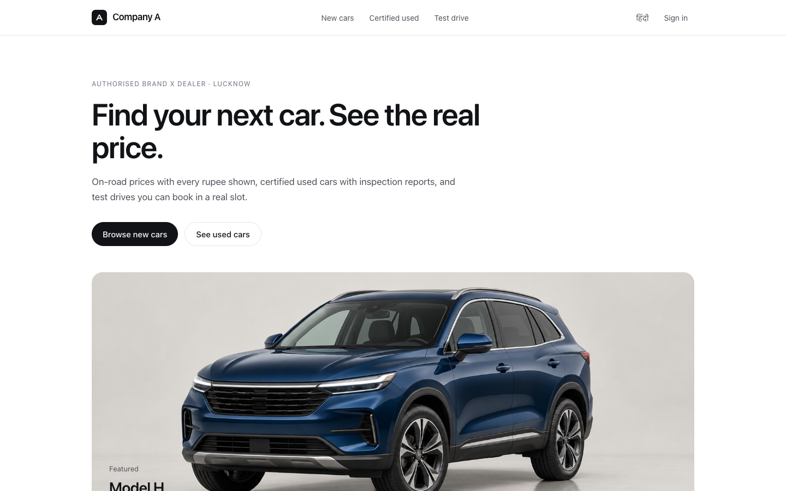
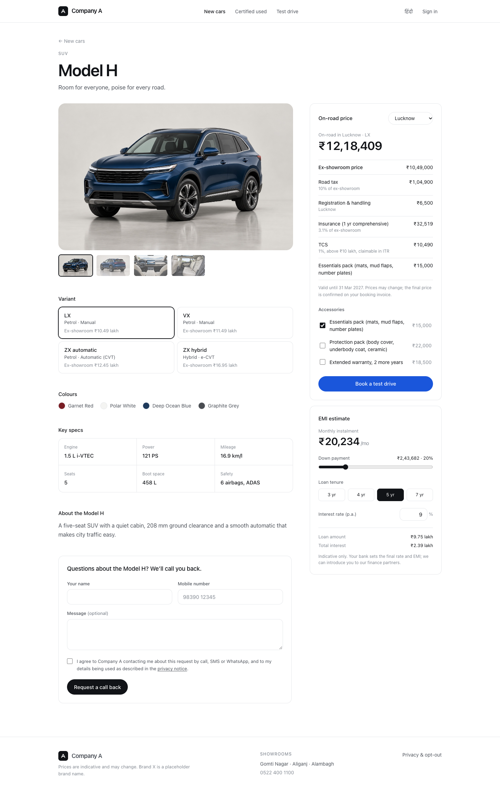
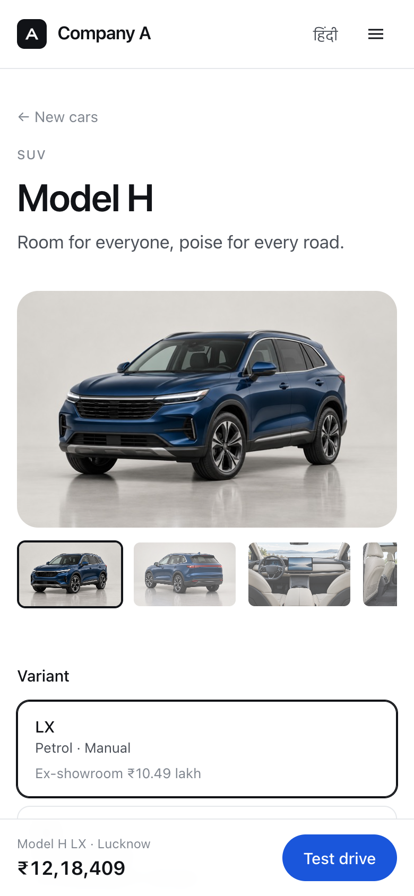
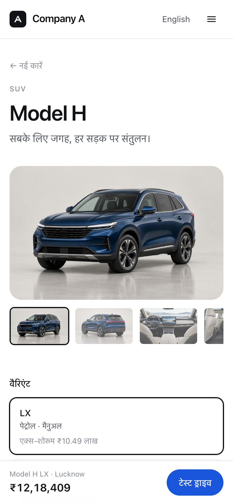
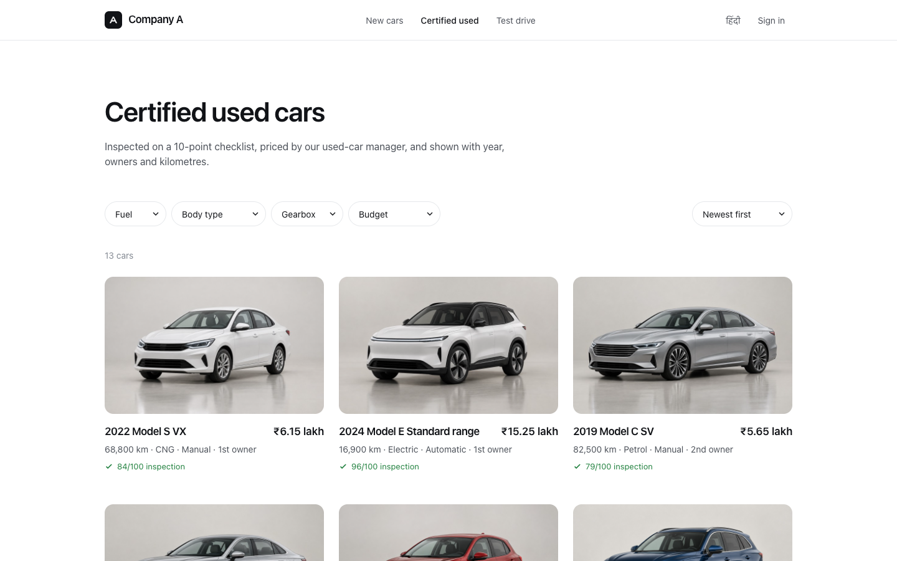
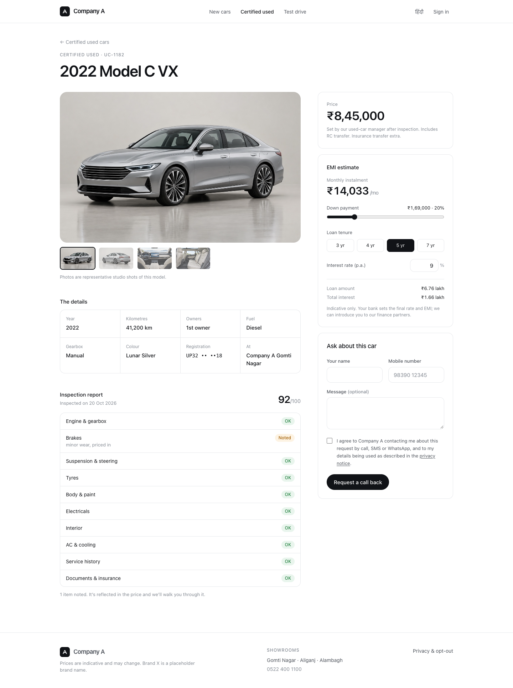
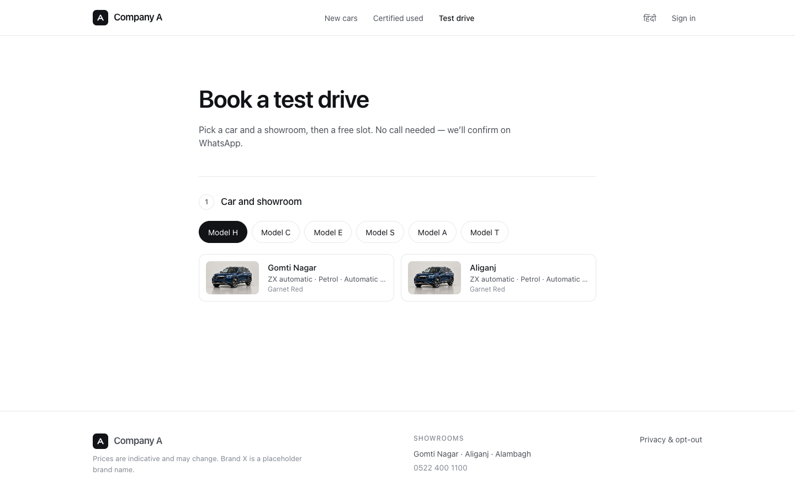
Left: used-car detail with the masked registration, the 10-point inspection checklist and the EMI estimate. Right: test drive, in three choices (showroom and car, day, slot), then your details.
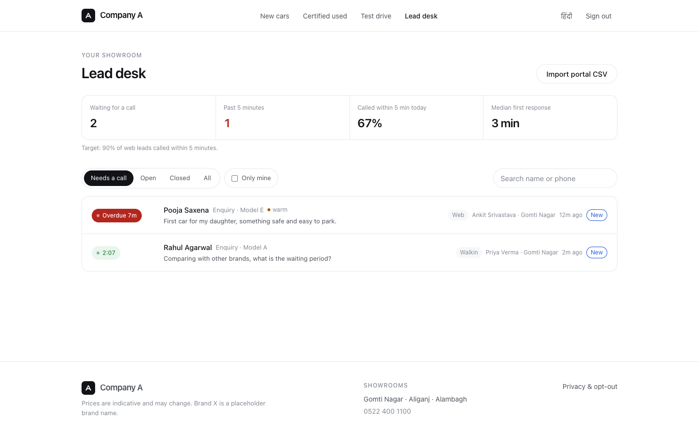
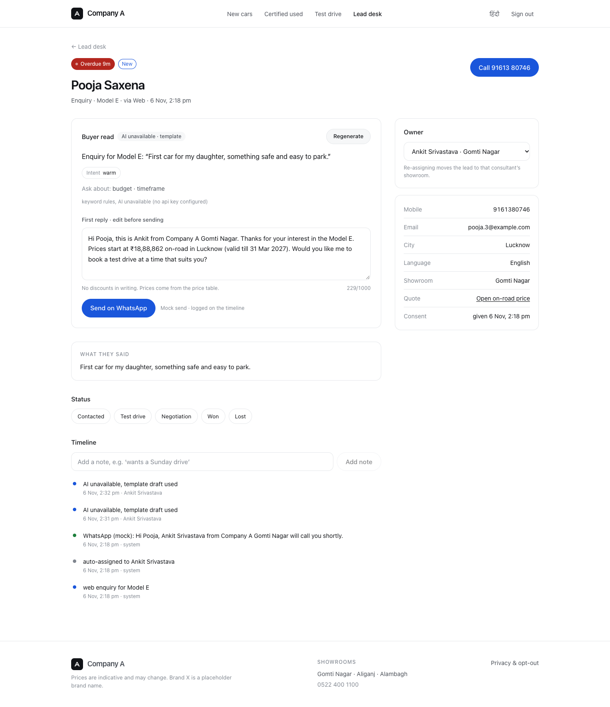
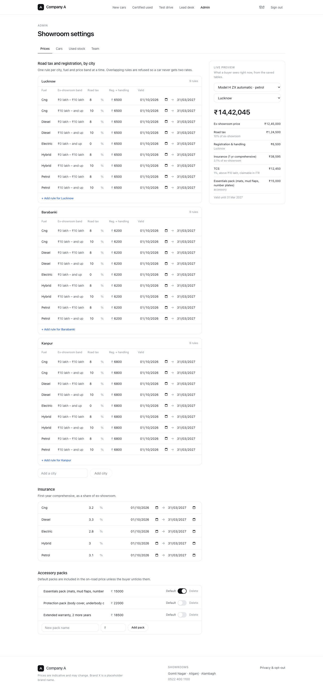
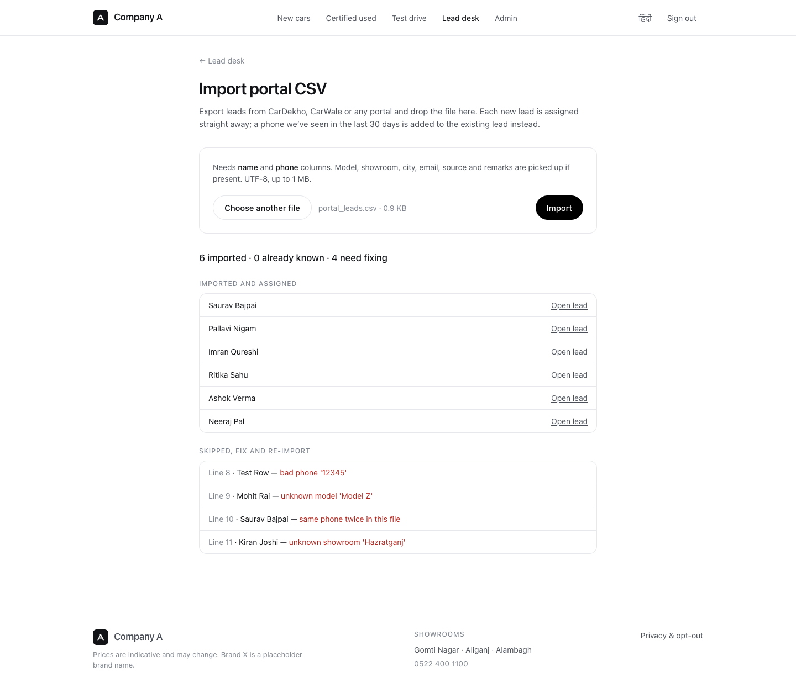
There are 202 backend tests (pytest) and 16 frontend tests (vitest). They concentrate on the logic that costs money if it's wrong:
| Area | What is pinned down |
|---|---|
| Pricing | Breakup sums to the total; band edges at exactly ₹10L; the TCS threshold; a missing or expired rule means "on request"; validity is the earliest date; EV exempt; the worked example to the rupee |
| Slots and booking | Past slots and those under 60 minutes away hidden; IST on a UTC server; a double booking returns 409; no consent means no lead |
| Assignment | Showroom match; specialist head start; least-loaded; tie-break; no consultant at the showroom; no consultants at all |
| AI guards | Discounts in EN and HI; a price written by the model; wrong language; links; low confidence; junk fields; every failure falls back; templates pass the checks; no price rule means no number |
| Desk and import | Scope by showroom; first action stops the clock; re-assign; CSV duplicates and bad rows; export is admin-only and blanks opted-out phones; opt-out blocks AI and sends |
| Access and security | Route-walking matrix; deactivation; no password hashes in responses; masking; rate limits; prod refuses the dev secret; safety headers |
| SEO | Per-page tags and JSON-LD; a real 404; noindex on staff pages; sitemap; boot data matches the API; HEAD requests |
| Frontend | EMI formula including 0%; rupee and lakh formatting in EN and HI; timer states |
Everything here goes beyond the problem statement. Each item is labelled so the reviewer can tell my choices from the client's facts.
| # | Assumption |
|---|---|
| A1 | Road tax (8% up to ₹10L and 10% above, EVs exempt), registration fees (₹6,200–6,800 by city), insurance (2.8–3.3% by fuel), TCS (1% above ₹10L) and accessory prices are illustrative. They're all editable in admin, and the real figures come from the dealer. |
| A2 | The ex-showroom price is the same in Lucknow, Kanpur and Barabanki (one state, one dealer price list). Only city rules change the on-road price. |
| A3 | Seeded rates are valid 1 Oct 2026 – 31 Mar 2027, one Indian financial-year half, so the demo never shows "on request" while it's being reviewed. |
| A4 | Test-drive slots are hourly, 10:00–17:00, up to 14 days ahead with at least 60 minutes' notice, and one buyer per demo car per slot. |
| A5 | The 5-minute clock stops at the consultant's first status change or sent message. A real call log would come from telephony, which is out of scope. |
| A6 | Buyers can enquire and book as guests. A buyer account exists to show the role, but nothing is gated behind it. |
| A7 | Leads imported from a portal CSV count as having given consent on that portal. The source is recorded on the lead. |
| A8 | Model names, specs and photos are invented. Photos are brand-free AI-generated studio shots. "Brand X" has no logo. |
| A9 | WhatsApp and SMS sends, payments and the DMS are mocked or replaced by a CSV export, as the brief allows. |
| A10 | Staff screens are English-only. Hindi covers the buyer journey and buyer-facing messages. Hindi is a toggle, not a separate /hi URL (§11). |
| A11 | EMI uses an indicative 9% rate the buyer can change. The bank sets the real rate, and the page says so. |
| A12 | New car models are added through the API. The admin UI edits models, variants, prices and used stock but has no "create model" screen, since a dealer adds one a year. |
| A13 | Seeded consultants, 2 per showroom, each carry model specialisms. Leads already in the system are a realistic mix of web, portal, walk-in and phone, across all statuses. |
Cut, deliberately:
Next, in order:
/hi/… URLs with hreflang for Hindi search.